A 15th-century book of plants, stars and bathing women, written in a script found nowhere else on earth. Here is what we actually know, what people argue about, and why a new paper says we have been turning its pages in the wrong order.
Built on the research, not the legendsEvery claim carries its sourceAbout 25 minutes
Scroll
I · The object
A small book that fits in two hands
Forget the legends for a moment. Start with the thing itself: calfskin, iron-gall ink, a few cheap pigments, and about 240 pages in a limp vellum cover that is not even its own.
The Voynich manuscript lives in a vault at Yale, where its catalogue entry calls it, flatly, "Cipher manuscript", shelfmark Beinecke MS 408.3 It is not large. Each leaf measures about 225 by 160 millimetres, roughly the size of a paperback, and the whole block is about five centimetres thick.35
Somebody numbered its leaves 1 to 116, probably in the 16th century. Only 102 of them survive. Fourteen have been lost, some clearly cut out, leaving stubs in the binding.45 Ten of the surviving leaves are fold-outs; one, the famous "rosettes" sheet, unfolds to six panels.4 That is why nobody can agree on a page count: Yale's press office says 234, others say around 240, and it depends on how you count the folds.18
The leaves are calfskin, settled in 2014 when a team at the University of York tested the protein in the skin.5 Yale reckons it took 14 or 15 calves.18 In 2009, for an Austrian television documentary, a laboratory in Illinois examined the ink and paint. The writing and the outlines of the drawings use one ordinary iron-gall ink. The blue is ground azurite, the greens are copper compounds, the red-brown is red ochre, and the binder is probably gum arabic. Nothing in it is out of place for the 15th century.859 There is, oddly, almost no yellow: René Zandbergen, who has studied the book for three decades, thinks a plant-based yellow has simply faded away.39
The cover is a later goat-skin wrapper from the 18th or 19th century. Insect holes in the first and last leaves show the book once had wooden boards.443
How old it is
The same documentary paid for the test that changed everything. Greg Hodgins at the University of Arizona cut four slivers of parchment, each about a millimetre by six, from four different leaves, and dated them by radiocarbon. All four agreed. The calves died between 1404 and 1438, with 95% probability.67
Two cautions, both from the people who did the work. First, the date is for the skin, not the ink: carbon dating cannot say when someone wrote on it, only that the parchment came first.6 Second, the materials and handwriting are all consistent with the early 15th century, so the simplest reading is that the book was made then.820 But a determined sceptic can still say: someone could have found blank old vellum later. Keep that in mind when we get to the hoax theories. (The Beinecke's own highlights page, for what it is worth, still carries its pre-2009 guess of the late 15th or 16th century.58)
Scroll the chart sideways on a small screen.
The carbon date, set against the people most often named as author. Dates of birth and death are standard; the dating is from the University of Arizona.67 The Cardan grille is the device Gordon Rugg used to show how gibberish with structure could be made; it was described in 1550.25
Every page, in order
The book falls into sections that scholars named long ago from the pictures, not from any reading of the text. Hover over or tap the tiles. Then switch to see two things you cannot see by flicking through the real book: the two statistical "languages" that Prescott Currier, a US Navy codebreaker, found in 1976,21 and the five scribes that Lisa Fagin Davis identified by their handwriting in 2020.20 Notice how the languages and the scribes line up with each other, and with the sections.
Page order, sections, Currier languages and scribes per page follow René Zandbergen's page-by-page catalogue at voynich.nu, which in turn follows Currier and Davis.52021 The zodiac and star pages carry no Currier label because he never classified them.
II · The journey
Two hundred years of silence, then an emperor
The book was made around 1420. The first person we can prove owned it signed his name around 1610. What happened in between, nobody knows.
Most of what the public "knows" about the manuscript's past comes from one paragraph in one letter. In August 1665 a Prague physician, Johannes Marcus Marci, sent the book to Athanasius Kircher, the Jesuit polymath in Rome who had claimed to read Egyptian hieroglyphs. Marci's covering letter says that a friend, now dead, had told him the book once belonged to Emperor Rudolf II, who paid its bearer 600 ducats and believed it to be the work of Roger Bacon.911 That is the whole of the evidence for Rudolf. No inventory of his famous collection lists it.13 Yale's catalogue still states the Rudolf story as fact; Zandbergen, more carefully, calls the informant credible but the claim unproven.313
The letter is itself a small mystery. Yale's catalogue dates it "1666 [or 1665?]"; the last digit is cramped. But a second letter, written to Kircher in January 1666 by another Prague scholar, already asks whether he has made any progress with the book, so 1665 it must be.1112
1404–1438
The calves whose skins became the book are alive. The parchment is made, and (most likely) soon written on.6Measured
About 1440 to about 1600
Nothing. Not a catalogue entry, not a mention, not a copy. Someone, somewhere, kept it.
1599, perhaps
Court records show Rudolf II buying books from an Augsburg physician, Karl Widemann, for 600 Rhenish gulden. The sum echoes Marci's 600 ducats. The record does not name the book. Hypothesis9
Before 1612
Rudolf II, Holy Roman Emperor and compulsive collector, is said to have bought it for 600 ducats as a Roger Bacon original. Hearsay913
1608–1622
Jacobus Horčický de Tepenec, Rudolf's chemist and distiller, writes his name at the foot of the first page. He was ennobled "de Tepenec" in October 1608 and died in September 1622, which brackets the signature. Someone later rubbed it out. It is the earliest proof of ownership. Documented1519
21 April 1639
Georg Baresch, a Prague alchemist, writes to Kircher about "a certain old book" he cannot read, full of "pictures of herbs, of which there are a great many in the codex, and of varied images, stars and other things". He had already sent Kircher hand-copied samples. This letter, found by Zandbergen in the Jesuit archives in the 1990s, is the first certain record of the manuscript. Documented10
19 August 1665
Marci, who inherited the book from Baresch, sends it to Rome with his letter. Kircher, as far as anyone knows, never wrote a word about it. Documented1011
1680 to 1912
The book sits in Jesuit hands in Rome. When the Italian state seized church property in 1873, the Jesuits hid their private manuscripts. Exactly where is disputed: tradition says the Villa Mondragone at Frascati; Zandbergen's 2023 reading of the archives says the Villa Torlonia at Castel Gandolfo.914
1911 or 1912
The Jesuits quietly sell about 280 manuscripts. A London dealer, Wilfrid Voynich, buys a batch "under promise of absolute secrecy", weeks or months before the Vatican buys the rest. Documented914
1921
Voynich tells an audience in Philadelphia that the books "had lain buried in the chests in which I found them in an ancient castle in Southern Europe". On the same stage, the philosopher William Romaine Newbold announces he has read it: Roger Bacon, in a microscopic cipher, describing sperm cells through a microscope. Refuted 19311417
1930–1961
Voynich dies in New York in 1930. His widow Ethel, daughter of the logician George Boole and author of the novel The Gadfly, keeps the book until her death in 1960, aged 96. The next year the dealer Hans P Kraus buys it for $24,500, asks $160,000, and finds no buyer. Documented15169
1969
Kraus gives it to Yale. It becomes Beinecke MS 408. Documented3
2009
Carbon dating and ink analysis, for Austrian television. The 15th-century date kills the Bacon theory, the Dee theory and the Kelley theory in one afternoon. Measured68
2016
Yale University Press publishes a full-size facsimile. The Beinecke says the manuscript's pages draw about half of all traffic to its online image viewer, and that its curator gets at least three emails a week from people who have cracked it.18 The next year a Spanish publisher begins selling 898 exact replicas, stains and wormholes included, at about €7,000 each, and a symphony named for the book has its premiere in New Haven. Documented5354
September 2024
Lisa Fagin Davis publishes multispectral images taken in 2014. On the first page, three faint columns of letters appear beside the text: a Latin alphabet, a column of Voynich letters, and a second Latin alphabet shifted by one. Somebody, she argues Marci himself, was trying a simple substitution cipher on it in the 1660s. It did not work then either. Documented19
July 2026
Colin Layfield and Lisa Fagin Davis publish "Singulion Structure and the Voynich Manuscript". Chapter V, below. New, contested2
The man who gave it his name
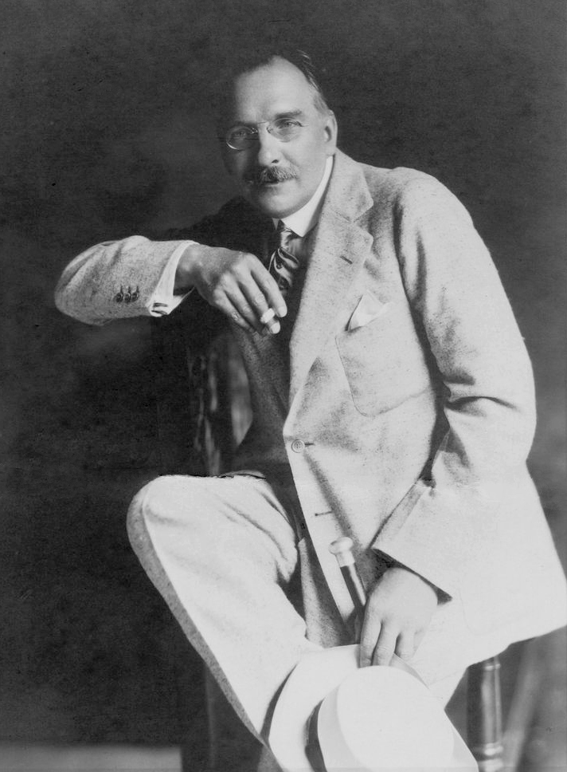
Wilfrid Voynich, born Michał Wojnicz in what is now Lithuania in 1865. Public domain.
Voynich is a character a novelist would reject as too much. A Polish revolutionary jailed by the Russians, exiled to Siberia, escaped in 1890 and reached London that October with nothing.15 Within a decade he had a rare-book shop on Soho Square and a reputation for finding things nobody else could. He married Ethel Boole, whose novel about an Italian revolutionary sold millions in the Soviet Union.16
He never said where he found the book. "I am bound by promises made to those from whom I acquired it," he wrote in 1917.14 His widow left a sealed letter naming Frascati, opened after her death.9 He also, around 1914, dabbed chemicals on the erased signature to try to read it, and left stains that hid it for a century.19
Did he fake it? Chapter VI. The short answer is that the carbon date, the medieval ink, the wormholes that run through the writing and the 17th-century letters describing the same book make that very hard to sustain.6810
III · The pictures
Plants that do not exist, stars that do, and 500 naked women
Almost every page is illustrated. The drawings are the only part of the book anyone can "read", and they raise as many questions as the text.
The herbal
About half the book is plants: one per page, usually, with root, stem, leaf and flower drawn in ink and washed with green, blue or brown, and paragraphs of text wrapped around them.36 They look like a herbal, the standard medieval reference book of medicinal plants. The trouble is that almost none of them can be identified. Some seem to be composites, the root of one plant on the stem of another.36 A few have plausible matches: the plant on folio 9v has been called a wild pansy since the 1930s, and Zandbergen tentatively reads folio 2v as a water lily.4546 Folio 33v was called a sunflower by a botanist in 1944, which would make the book post-Columbian. The carbon date says otherwise, and so do most botanists.45
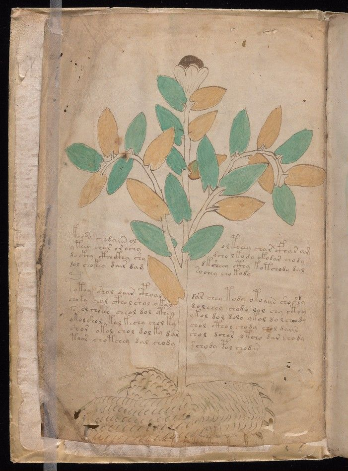
f1v. The first plant in the book. Root like a tuber with claws.5
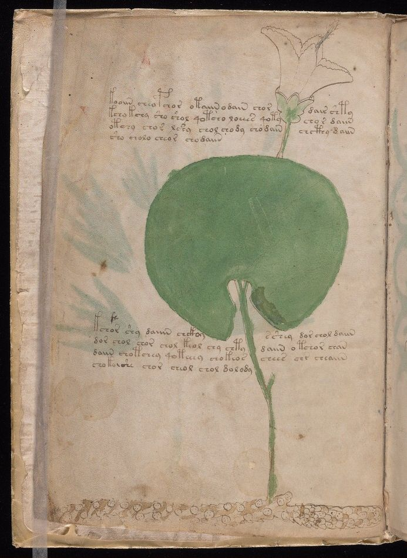
f2v. Perhaps a water lily. "Presumably", says Zandbergen.45
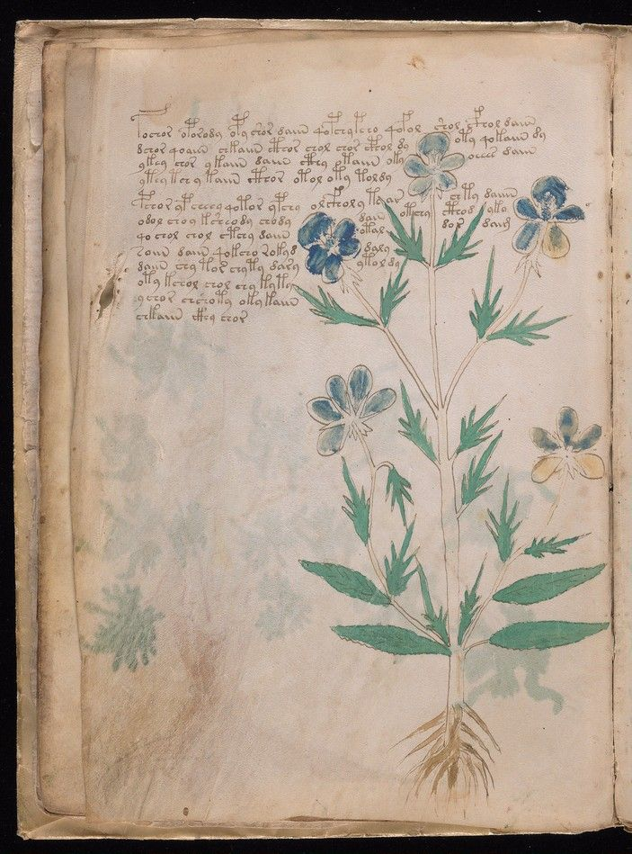
f9v. The nearest thing to a confident identification: Viola tricolor, the wild pansy.46
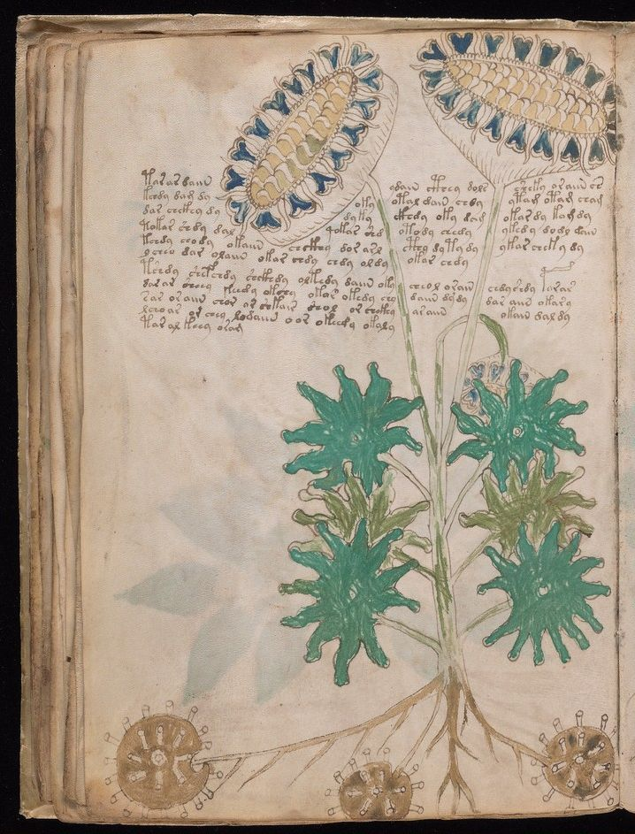
f33v. The "sunflower". If it were one, the book would be post-1492. It almost certainly is not.45
The stars and the zodiac
After the plants come circular diagrams of suns, moons and stars, including a cluster that looks very like the Pleiades.36 Then a zodiac, and a strange one. It starts with Pisces rather than Aries. Aries and Taurus are each drawn twice, on two pages, with 15 figures apiece rather than 30. Capricorn and Aquarius are missing, almost certainly cut out with folio 74.542 Around each sign stand rings of small naked women, each holding a star, each with a label of Voynich text: 30 to a sign, which looks a lot like the 30 degrees of a zodiac sign.40 In the centre of each, a later hand has written the month in a Romance language: "mars", "aberil", "may", "octembre". Zandbergen reads it as northern French; others have argued for Occitan.6641
Signs, folios, figure counts and the month names follow Zandbergen's page descriptions.404142
Sagittarius is the page that scholars keep coming back to, because it is drawn not as a centaur but as a man with a crossbow. The weapon's shape and the man's clothes are the sort of thing an art historian can date. A 2003 study of the crossbow put it in the first half of the 14th century; Zandbergen finds its closest parallels in German manuscripts of 1400 to 1500.5739 Either way, the picture and the carbon date are not far apart.
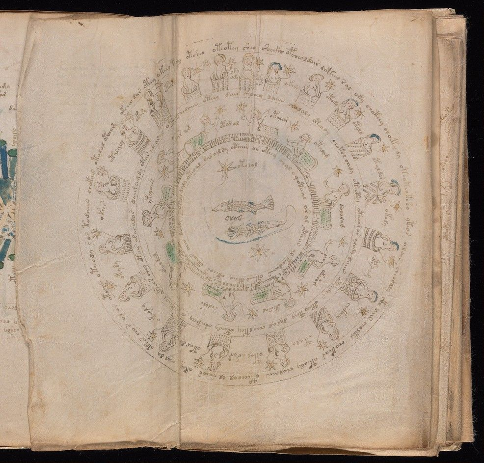
f70v2, Pisces. The first sign. Twenty-nine figures in tubs, each with a star and a label. "March" in the middle, in a later hand.40
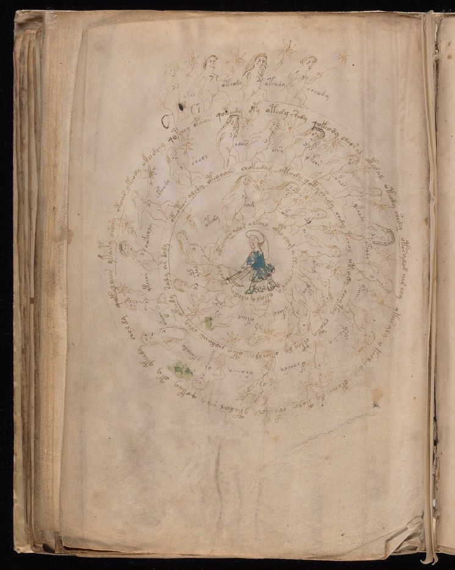
f73v, Sagittarius. A crossbowman, not a centaur. The last surviving sign.42
The baths
Then the section that gets the manuscript into the tabloids. Across twenty pages, naked women stand, sit and wade in pools of green and blue, connected by pipes, tubes and channels that run from one drawing to the next and sometimes off the page altogether.37 Scholars have called it "biological" or "balneological", the study of baths. Medieval books about hot springs, such as the 13th-century De balneis Puteolanis, show bathers in pools fed by pipes, and the resemblance has been noticed often.36 Others see the tubes as anatomy, or allegory. Nobody knows. A small animal in the margin of folio 80v has been called an armadillo, which would make the book American, and also a pangolin and a lamb.61 Nobody has published a firm count of the figures. A tally by one researcher on the main Voynich discussion forum puts the human figures in the whole book above 500, of whom about 50 are clothed and perhaps 50 to 60 are men.68
One detail in this section turns out to matter enormously. On the back of folio 78, two channels of water leave a tub and run into the gutter of the book. They reappear on the front of folio 81. Between them, as the book is bound, lie four pages of something else.37 Hold that thought until Chapter V.
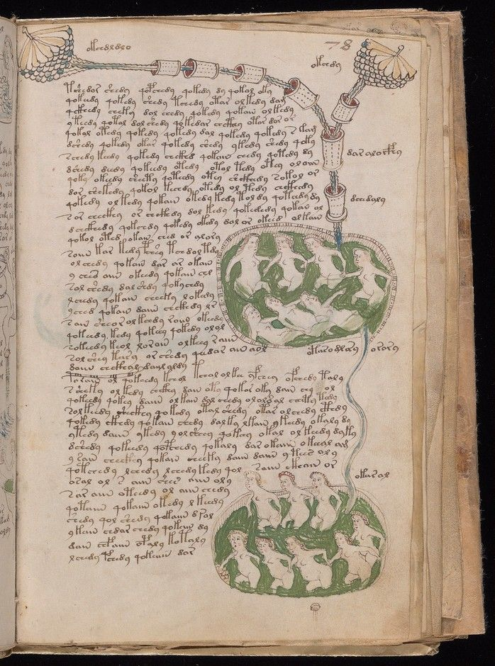
1Pipes with scalloped, cloud-like ends run across the top of the page and down the right-hand edge.
2A chain of vessels, each with a one-word label beside it. Labels like these are one of the few footholds for anyone trying to decode the script.
3A pool of green water with figures bathing. The green is a copper pigment; the blue elsewhere is azurite.8
4A channel of blue water joins the two pools. On the back of this leaf, channels like this one run off the page and reappear four pages later.37
5The text is written in paragraphs, left to right, with a straight left margin and a ragged right one, flowing around the drawings. That suggests the pictures were drawn first.19
6Single words placed beside figures, probably labels. Davis's scribe 2 wrote every page of this section.20
Folio 78r. Beinecke MS 408, Yale, public domain.52
The rosettes
The largest sheet in the book unfolds to six panels and carries the strangest drawing: nine circles in a three-by-three grid, joined by causeways and tubes, with a castle, towers, a thing like a volcano or a cone of scales, and what may be the sun and moon.3860 Is it a map? A cosmos? A plan of a city? The one hard clue is architectural. The castle's battlements have swallow-tail merlons, the V-notched tops that belong to northern Italy and the Alps in the 15th century, though they also turn up in southern Germany, Switzerland and Austria.3839 It is one reason Zandbergen's best guess for the book's origin is "Alpine". Drag, pinch or use the buttons to explore.
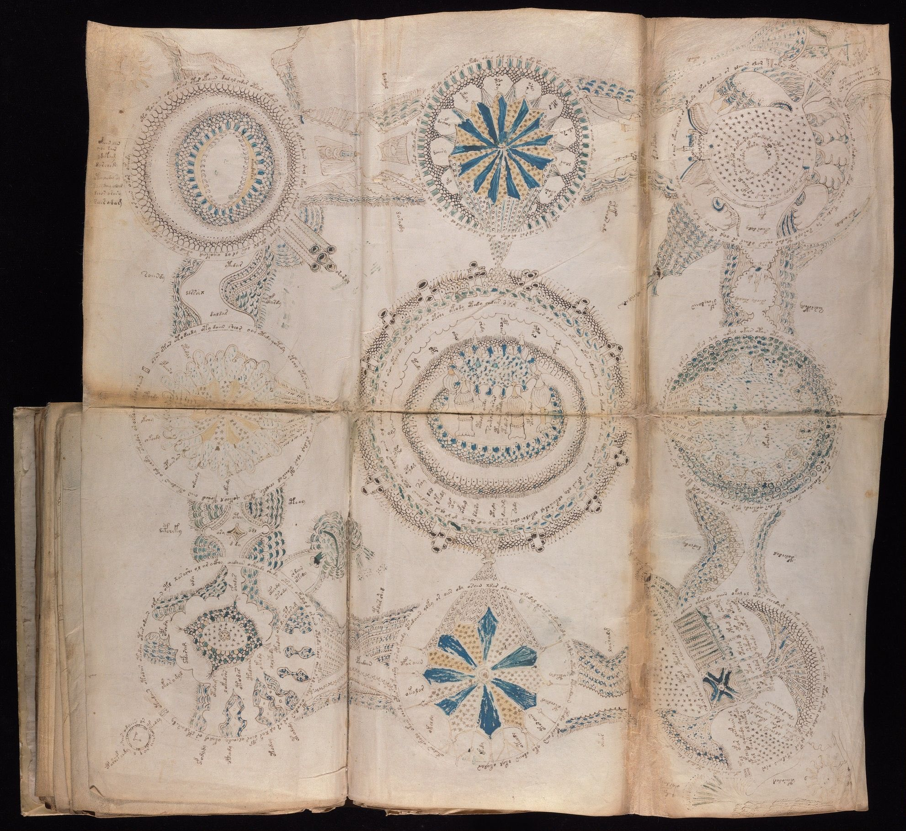
Keyboard: + and − to zoom, arrows to pan, 0 to reset. Numbered buttons jump to details.
Folios 85v to 86r. Beinecke MS 408, Yale, public domain.52
The jars and the stars
Two more sections close the book. In the "pharmaceutical" pages, rows of plant parts, roots and leaves, are laid out beside ornate jars, as if a herbal had been cut up and sorted: 57 rows of herbs and 241 fragments, by one count.36 Then come the "recipes", 23 pages of nothing but text, broken into more than 300 short paragraphs, each marked with a star in the margin, 324 stars in all.543 If the book really is a book of remedies, this is where you would expect the instructions.
And on the very last page, folio 116v, four lines in a different script altogether: a mix of Latin letters, German-looking words and a few Voynich letters that nobody has read either. The first word is widely read as "poxleber", an old German word for goat's liver, and the last line seems to end "so nim geis milch", "so take goat's milk", a reading proposed in the 1930s. Crosses between the words look like those in short charms. A remedy? A pen trial? A later owner's note? The multispectral scans made it clearer and no more legible.4319
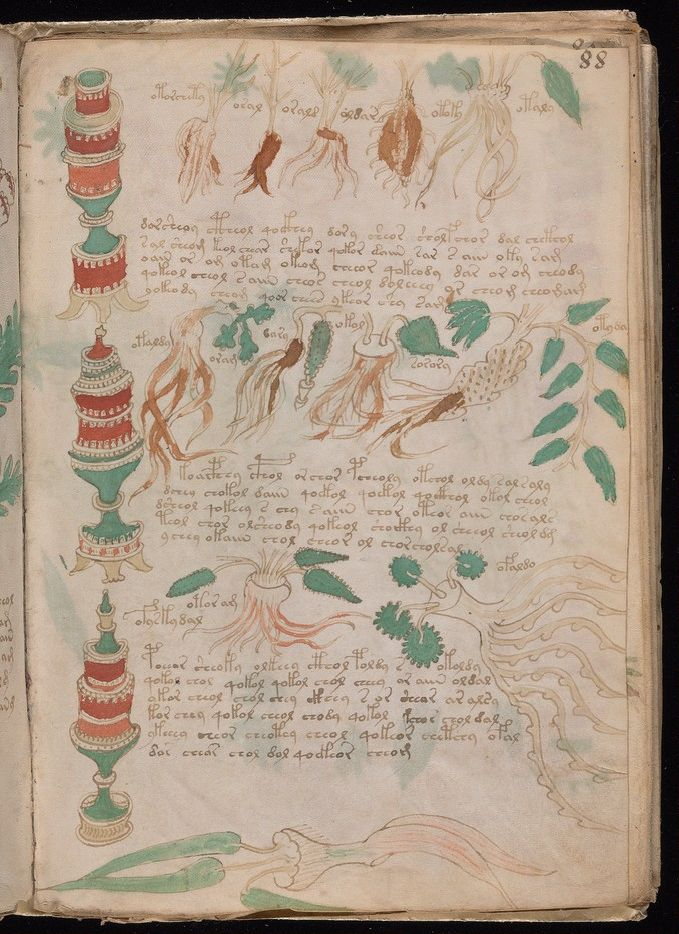
f88r. Jars and plant parts, from the pharmaceutical section.36
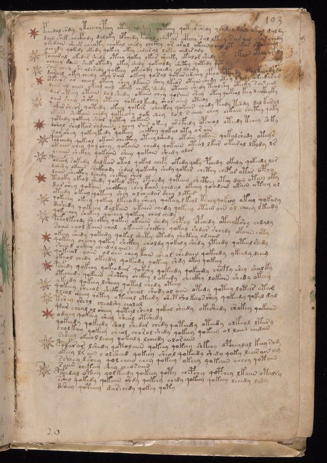
f103r. The star-marked paragraphs of the recipes section.43
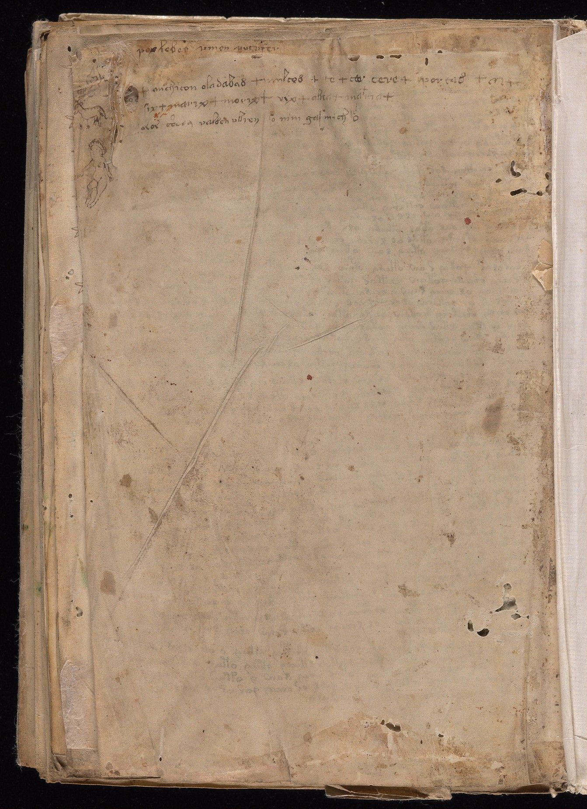
f116v. The last page, with its unread "michitonese" lines in a second hand.19
IV · The script
A language that behaves like no language
The letters are easy to copy and impossible to read. The strange part is not that we cannot translate the text. It is that, statistically, it does things no known writing does.
The script runs left to right and top to bottom, in paragraphs with a straight left edge, as if written by someone fluent in it. Corrections are so rare that Voynich's own secretary, after years with the book, doubted it contained any.66 Scholars disagree on how many distinct letters there are, because they disagree on where one letter ends and the next begins. Bowern and Lindemann count 21 or 22 common signs plus about as many rare ones; Davis puts the basic set at around thirty.2320
To talk about it at all, researchers transliterate it: each sign gets a Latin letter. The standard system is the European Voynich Alphabet, or EVA, from the 1990s.47 It is important to say what EVA is not. The letter "a" in EVA does not mean the sign sounds like "a". It is a label, chosen because the sign looks a bit like an "a". When you see "daiin" written out, that is a transliteration, not a reading.
Tap a letter. The shapes below are from a font drawn by the pathologist Gabriel Landini, who made it from the manuscript's own hand in the 1990s.49
Pick a letter to see how it behaves. The gallows letters are shown in red.
The first three lines of the book
Here is how folio 1r begins, in Landini's font and in EVA. Hover over a word to match the two.47
Write your own Voynichese
Type EVA letters (a to z, and spaces) and see them in the script. This is a party trick, not a translation: it only shows what the signs look like.
Why the text is so strange
For this page we took the standard transliteration of the whole manuscript, about 34,000 words of running text in some 7,400 distinct forms, and ran the same simple counts on it and on three ordinary texts: an English novel, an Italian poem and a Latin history.4748 These are the findings that every theory has to explain, and most of them were first noticed by the American codebreakers who worked on the book after the Second World War.2221
Voynichese words are all much the same length. Two out of three have four, five or six letters, and words of ten letters or more barely exist. English and Latin have long tails of long words. This narrow, hump-shaped distribution is one of the oldest puzzles, and one of the arguments that the "words" are not words at all, or are built from parts according to rules.2322
This one is the heart of the problem. If you know one letter, how hard is it to guess the next? In English, Italian or Latin, not very: roughly three bits of uncertainty. In Voynichese, about two, a huge gap. The next letter is far too easy to predict. "q" is followed by "o" 98% of the time; "i" runs are followed by "n"; "d" likes "y".4723 A language that predictable would carry very little information per letter, which is why some researchers suspect a cipher that pads the text, a shorthand, a constructed language, or nonsense.2326 The Hebrew-by-computer claim of 2016, for one, never explained this.35 Bowern and Lindemann tested the obvious fixes, such as dropping vowels or using shorthand, and found none of them pushes a real language this low; the only thing that does is to merge sounds that the language keeps apart.23
In the three texts we tested, a word repeats itself straight away less than once in 2,000 words. In Voynichese it happens about once in 120, and near-repeats, where only one letter changes, are commoner still: "qokedy qokedy", "chedy qokedy shedy".47 How damning that is depends on what you compare it with. Bowern and Lindemann, using samples from hundreds of languages, found the Voynich rate high but "within the realm of plausibility"; Timm and Schinner replied that their samples were badly cleaned.2326 In 2020 those two built a model in which a scribe writes each new word by copying a word nearby and tweaking it, and showed it reproduces this and many other statistics. Their conclusion: the text may be meaningless, generated rather than written.26 Others read the same facts as a sign of inflected words, or a verbose cipher.23
In any real text the commonest word is about twice as common as the second, three times the third, and so on. The result is a straight line on a log-log plot, called Zipf's law. Voynichese obeys it. In 2013 two physicists went further and showed that Voynich words cluster by section, the way vocabulary clusters by topic in real books: "herbal" words stay in the herbal pages.24 The hoax camp replies that cheap generating processes can mimic both.2625
Currier's 1976 discovery, the "two languages", is visible in a single chart. The commonest word in the herbal pages, "daiin", drops to a third of its frequency in the bathing and star pages, and whole families of words ("chedy", "shedy", "qokeedy") that dominate language B are all but absent from language A.21 Currier himself was careful: he did not claim two real languages, only two statistically different kinds of text.21 They might be two dialects, two subjects, two cipher keys, or two scribes with different habits. Davis's handwriting study found that the scribes and the languages line up closely, which makes the last of those harder to dismiss.20
Finally, the oddest thing of all. In an ordinary text, a line break is an accident of the page; the words do not know it is there. In the Voynich manuscript they do. The first word of a line starts with "p", "t" or "y" far more often than any other word does, and starts with "o" or the bench letters far less. Some 85% of paragraphs open with a gallows letter, which has led Bowern and Lindemann to suggest the gallows there are not part of the word at all, just a mark that a paragraph is starting.2322 Whatever produced this text was thinking in lines, which is not how anyone writes language, but is how someone might encipher it, decorate it, or make it up.
Build a word
Analysts since the 1960s have described Voynich words as if they were built from slots: an optional prefix, a start, a middle, and an ending.2223 This toy follows a simplified version of those rules, with the slot contents weighted roughly by how common they are. Press the button and it will tell you whether the word you built actually occurs in the manuscript.
Prefix
Start
Middle
Ending
The slot model is a simplification of the "core, mantle and crust" grammar proposed by Jorge Stolfi and the earlier prefix, root and suffix analyses by Tiltman and D'Imperio.2223 Word counts are from the standard transliteration.47
V · The hands
Five scribes, and a book folded the wrong way
The "mad genius in an attic" theory needs one author. The handwriting says there were five. And a paper published this summer says the sheets they wrote were never meant to be nested into a book at all.
Lisa Fagin Davis is executive director of the Medieval Academy of America and a palaeographer, a specialist in old handwriting. In 2020 she did to the Voynich manuscript what palaeographers do to any medieval book: she compared the shapes of individual letters across every page. She found five scribes. Scribe 1 wrote 113 of the 227 pages, including most of the herbal. Scribe 2 wrote the whole bathing section and a second batch of herbal pages. Scribes 3, 4 and 5 took the rest. And the scribes track Currier's languages: scribe 1's pages are language A, scribe 2's are language B.20
That matters for every theory. A hoax needs five conspirators, or one forger faking five hands. A cipher needs five people who all knew the system. A natural language needs a community of people who could write it. "The 'lone genius' idea is kind of out of the door," Davis told the Guardian this week.1
The 2026 paper
Then, in July 2026, after trying the method out on a Yale linguistics colloquium the previous autumn,56 Davis and Colin Layfield, a computer scientist at the University of Malta, published a paper in the journal Digital Medievalist with a dull title and a startling claim: "Singulion Structure and the Voynich Manuscript".2 To follow it you need one piece of bookbinding.
A medieval book is made of sheets folded once, called bifolia. Normally a scribe nests several folded sheets inside one another to make a gathering, or quire, sews through the fold, and stacks the quires. A quire of four sheets is a quaternion; one of five is a quinion; and a "quire" of a single sheet is a singulion.2 The arrangement decides which pages end up next to which. Try it.
Layfield and Davis argue that the Voynich sheets were written as singulions, each one a little four-page booklet complete in itself, and only later nested into quires by someone who did not know the order, and bound.2 They have three kinds of evidence.
The pictures. Drawings and stains cross the fold between the two halves of a sheet, as you would expect. But they also cross from one sheet to another sheet that is not next to it in the bound book: the two water channels that leave folio 78v and arrive on folio 81r are the clearest case. That only makes sense if the sheets were decorated before they were nested, "an extremely unusual sequence of production".237
The handwriting. With two exceptions, all four pages of every surviving sheet are by a single scribe. If the sheets had been nested first and then written straight through, you would expect scribes to change mid-sheet.2
The text. This is the computational part. Using a technique called latent semantic analysis, which measures how similar two blocks of text are in the words they use, they scored every pair of pages in the Voynich and in two real medieval books, the Aberdeen Bestiary and the Speculum humanae salvationis. In the real books, the two halves of one sheet are less alike than the front and back of one leaf, because in a nested quire those halves are pages apart. In the Voynich, they are just as alike. That is what you would see if each sheet were a self-contained unit.2
They then tried to work out an original order. For the recipes section, their best reordering raised the similarity between facing pages by 20%.2
What it would change, and what it would not
It does not decode anything. The authors say so. What it does is explain why the text "flows" so badly from page to page, and it changes the picture of who made the book: not one author in one sitting but a group, producing booklets, "perhaps a set of booklets through which information was passed down from one generation to the next", as Davis put it to the Guardian.1 She has said the only other medieval manuscripts she knows that were kept as single sheets are north African Qur'ans made as teaching booklets; that comparison is hers in interview and is not in the paper, which uses two Latin manuscripts as its controls.12 Add the women, the baths and the possible plants, and she arrives at a guess she is careful to label: "it starts to feel like a book of women's folk knowledge that's being preserved. But you cannot prove that yet."1
Two caveats are worth keeping in view. The similarity measure was designed for texts you can read; applying it to text where you cannot even be sure what a word is, is a leap, and researchers on the hoax side have already said so.2 And "misbound" is a big claim built partly on a statistical result (the p-value for the Voynich comparison is 0.168, which means "no significant difference", which is the point), so it will stand or fall on whether other methods find the same thing.2 The authors' own closing hope is modest: that "linguists and cryptologists will revisit past work in the light of this hypothesis".2
"The irony is that whoever mis-bound this manuscript still did us a huge favour by ensuring its survival."Lisa Fagin Davis, to the Guardian, October 20261
VI · The claims
A century of "solved"
Roger Bacon's microscope. A Cathar suicide manual. Hebrew by computer. Proto-Romance in two weeks. Every few years someone cracks the Voynich manuscript, and every time the same things go wrong.
Before the ledger, a test. A genuine decipherment has to do four things, and most claims fail the first: it must give each sign a fixed value, it must produce grammatical text in a known language, it must work on passages the decoder did not choose, and it must explain the statistics in Chapter IV. Newbold's method, the first great failure, produced Latin only because the final step was to anagram the letters, which can produce anything.17 Nearly a century later the "proto-Romance" reading of 2019 failed for the same reason in a new form: its sign values changed from word to word.31
1921
Refuted
William Romaine Newbold: Roger Bacon's microscopic cipher
A Pennsylvania philosophy professor claimed each letter hid tiny shorthand strokes which, anagrammed, gave Latin: Bacon had seen sperm cells through a microscope in the 1200s. In 1931 John Manly showed the "strokes" were cracks in the dried ink and that the anagram step could yield any text at all.1735
1943
Refuted
Joseph Feely: Bacon's diary in abbreviated Latin
A Rochester lawyer's simple substitution plus heavy abbreviation. The Latin it produced was unacceptable to Latinists and no other researcher took it up.35
1945
Refuted
Leonell Strong: a Tudor astrologer's contraceptive recipes
A Yale cancer geneticist announced in the journal Science that the author was Anthony Askham and the text concerned women's diseases. The method depended on his own transliteration and the output made no sense.6435
1944–70
Unproven
William Friedman and the US codebreakers: an artificial language
The man who broke Japan's Purple cipher ran two study groups on the manuscript, in 1944–46 and 1962–63, and produced the first machine transcription. His own verdict he sealed as an anagram in a 1959 footnote, opened after his death: the book was "an early attempt to construct an artificial or universal language of the a priori type". Nobody has found such a language from the 1400s.5122
1976
Accepted
Prescott Currier: two "languages", more than one hand
A Navy cryptanalyst showed the text splits into two statistically different halves, now called Currier A and B, and that more than one person wrote it. Still the backbone of all text analysis.21
1978
Accepted
Mary D'Imperio: "An Elegant Enigma"
Not a solution but the survey every later researcher starts from, written inside the National Security Agency and declassified decades later.22
1978
Refuted
Robert Brumbaugh: a forgery for Rudolf, via numbers
A Yale philosopher mapped the signs to digits and the digits to letters, read a few plant labels, and concluded the book was a 16th-century fake made to sell to the emperor. The readings did not convince, and the carbon date later ruled out the century.6535
1987
Refuted
Leo Levitov: a Cathar suicide liturgy
The text was a pidgin of Flemish, Old French and High German describing the Cathars' rite of ritual death and a cult of Isis. Linguists demolished the grammar; historians pointed out the "Cathar" practices contradict everything known about the Cathars.35
2004
Unproven
Gordon Rugg: a hoax made with a table and a grille
A Keele computer scientist showed that a table of syllables and a card with holes cut in it, a Cardan grille, could generate Voynich-like gibberish fast. It proved such text is cheap to make, not that this text was made that way; and the grille was only described in 1550, a century after the parchment.2562
2013
Partly accepted
Montemurro and Zanette: the words carry information
Two physicists found that word distributions across the book cluster by section, as topics do in real texts. The finding stands; whether it proves meaning is disputed, since generated text can mimic it.2426
2013
Unsupported
Tucker and Talbert: a Mexican herbal in Nahuatl
Two botanists matched the plants to those of 16th-century New Spain and proposed a post-Conquest origin. That requires the book to have been written on vellum a century old, and ignores the 15th-century handwriting, quire marks and binding.3334
2014
Unproven
Stephen Bax: ten words read from the plant labels
A Bedfordshire linguist proposed sound values for 14 signs by matching labels to plant names, as Champollion matched royal names in hieroglyphs. He called it "partial". Critics found the letter values inconsistent and the plant identifications circular. Bax died in 2017 without taking it further.3235
2016–18
Unproven
Hauer and Kondrak: "AI says it's Hebrew"
Two Alberta computer scientists built a method for guessing the language behind an unknown script and ran it on the Voynich. It said Hebrew, assuming the words were anagrammed. The press said a computer had cracked the book; the authors said the opposite, and the paper itself warns the result could be an artefact of the anagramming. It does not explain the low entropy.272835
2017
Refuted
Nicholas Gibbs: Latin abbreviations for women's health
A television writer announced in the Times Literary Supplement that the signs were Latin shorthand and the book a compilation of remedies for women. Within days Lisa Fagin Davis noted the two lines he had "translated" were not grammatical Latin and the women's-health idea was decades old. "Frankly, I'm a little surprised the TLS published it."29
2019
Refuted
Gerard Cheshire: "proto-Romance", solved in two weeks
A Bristol research associate published in Romance Studies that the text was a lost ancestor of the Romance languages, written by Dominican nuns. The university's press release went out on 15 May 2019 and was withdrawn the next day: "concerns have been raised about the validity of this research from academics in the fields of linguistics and medieval studies". Davis: "'proto-Romance language' is not a thing."3031
2020
Unproven
Timm and Schinner: meaningless text, generated by copying
Schinner had argued in 2007 that the text's statistics look like the output of a random process.63 The 2020 model, in which the scribe writes each word by copying one nearby and altering it, reproduces Zipf's law, the repeats, and much else. The strongest current version of the "it means nothing" hypothesis; the natural-language camp disputes it.26
2020
Accepted
Lisa Fagin Davis: five scribes
Handwriting analysis across every page finds five hands, tracking Currier's two languages. The current baseline.20
2021
Survey
Bowern and Lindemann: what linguistics can say
Two Yale linguists reviewed everything known about the text's structure and argued it is best treated as a natural language in an unusual encoding, while conceding "the contents remain undecipherable". Hoax researchers replied in print.23
2022
Unproven
Gaskell and Bowern: what does human gibberish look like?
Forty-two volunteers were asked to write meaningless text. On 41 of 42 statistical measures the Voynich text looked like their gibberish; on 38 of 42 it looked like meaningful text. The one thing the volunteers could not reproduce was the Voynich habit of putting particular letters only at particular places in a word. The authors do not claim the book is gibberish, only that the question is open.67
2025
Unproven
Michael Greshko: the "Naibbe" cipher
A science journalist designed a cipher using dice, playing cards and substitution tables that turns Latin or Italian into text with Voynich-like statistics, using only 15th-century tools. He does not claim it is the real method, only that a meaningful cipher of the period could produce such text. A rebuttal followed in 2026.5055
2026
New, contested
Layfield and Davis: the sheets are singulions, and misbound
See Chapter V. Not a decipherment; a claim about how the book was made. Critics question whether text-similarity methods built for readable text can be trusted on this one.2
Did Voynich fake it himself?
It is the obvious question, and a serious one: he was a dealer who stood to gain, and he was cagey about where it came from. Against it: the parchment is 15th-century, the ink and pigments are medieval, wormholes run through the writing, the sewing is old, and three 17th-century letters from Prague describe an unreadable book of herbs and stars that matches this one.6810 The multispectral scans found no erased earlier text anywhere, so it is not a palimpsest.19 To forge it, Voynich would have needed a stock of blank 1420s calfskin, five handwriting styles and a 1639 letter in a Vatican archive. Zandbergen calls that an "unacceptable coincidence".35 That is not quite the same as impossible, which is why the theory never entirely dies.
VII · What we know
Established, argued, guessed
The honest state of play, in three columns. Most popular accounts blur them. This page has tried not to.
If you want to look for yourself, Yale has put every page online at full resolution, free to use.352 The standard transliteration, the analyses, and three decades of patient catalogue work are on René Zandbergen's site, which is where most of this page's facts come from.5 And the Beinecke's curator gets three emails a week from people who have solved it.18 Read Chapter IV before you send the fourth.
VIII · Sources and method
Where every claim comes from
Numbers in the text link here. Where sources disagree, the text says so. The statistics in Chapter IV were computed for this page; the method and code are on the About page.
Philip Oltermann, "A medieval manuscript has confounded scholars for centuries. Have they been reading it wrong all this time?", the Guardian, 6 October 2026.theguardian.com
Colin Layfield and Lisa Fagin Davis, "Singulion Structure and the Voynich Manuscript", Digital Medievalist 19 (2026), online 10 July 2026.doi.org/10.4000/16k0a
Beinecke Rare Book and Manuscript Library, Yale, catalogue record for "Cipher manuscript", MS 408, with full digital images.collections.library.yale.edu
René Zandbergen, "Description of the manuscript", voynich.nu: dimensions, folios, quires, sections, the five hands.voynich.nu/descr.html
René Zandbergen, "The radio-carbon dating of the Voynich MS", voynich.nu: samples from folios 8, 26, 47 and 68; 1404–1438 at 95%; the caveat about ink.voynich.nu/extra/carbon.html
University of Arizona news release, 11 February 2011, "Mysterious Voynich manuscript dates back to the 15th century", as reproduced by Medievalists.net (the original page is no longer online).medievalists.net
McCrone Associates, materials analysis report for the Beinecke, 1 April 2009, as summarised with quotations by Nick Pelling, Cipher Mysteries, 1 June 2011. The Beinecke's own copy of the PDF is no longer served; the findings are also published in Zyats et al, "Physical Findings", in Clemens (ed.), 2016 (source 59).ciphermysteries.com
René Zandbergen, "History of the manuscript", voynich.nu: Rudolf, Widemann, the Jesuit sale, Kraus.voynich.nu/history.html
René Zandbergen, "The letters", voynich.nu: Baresch 1639, Marci 1665 and Kinner, with translations.voynich.nu/letters.html
Beinecke Library, catalogue record for the Marci letter, MS 408A, dated "AD 1666 [or 1665?]".collections.library.yale.edu
René Zandbergen, "Special topic: the history", voynich.nu: the Rudolf hearsay, Rudolf's inventories, and the John Dee hypothesis ("None of the three points can be substantiated").voynich.nu/extra/sp_history.html
René Zandbergen, "Villa Mondragone", voynich.nu: Voynich's own statements, the secrecy, and the 2023 case for Castel Gandolfo.voynich.nu/extra/mondragone.html
René Zandbergen, "Curricula vitae", voynich.nu: lives of Horčický, Baresch, Marci, Voynich, Nill.voynich.nu/curricula.html
Dictionary of Irish Biography, "Voynich, Ethel Lilian".dib.ie
John Matthews Manly, "Roger Bacon and the Voynich MS", Speculum 6:3 (1931), pp. 345–391.doi.org/10.2307/2848508
Yale News, "Mysterious Voynich manuscript reborn in facsimile edition", 31 October 2016: 234 pages, 14–15 calfskins, the viewer traffic, the curator's emails.news.yale.edu
Lisa Fagin Davis, "Multispectral imaging and the Voynich manuscript", Manuscript Road Trip, 8 September 2024.manuscriptroadtrip.wordpress.com
Lisa Fagin Davis, "How Many Glyphs and How Many Scribes? Digital Paleography and the Voynich Manuscript", Manuscript Studies 5:1 (2020), pp. 164–180.doi.org/10.1353/mns.2020.0011
Prescott Currier, "Some Important New Statistical Findings", paper to the Voynich seminar, Washington, 30 November 1976; text at voynich.nu.voynich.nu/extra/curr_main.html
Mary E D'Imperio, "The Voynich Manuscript: An Elegant Enigma", National Security Agency, 1978 (declassified).media.defense.gov
Marcelo Montemurro and Damián Zanette, "Keywords and Co-Occurrence Patterns in the Voynich Manuscript", PLoS ONE 8(6): e66344, 2013.doi.org/10.1371/journal.pone.0066344
Gordon Rugg, "An Elegant Hoax? A Possible Solution to the Voynich Manuscript", Cryptologia 28:1 (2004), pp. 31–46.doi.org/10.1080/0161-110491892755
Torsten Timm and Andreas Schinner, "A possible generating algorithm of the Voynich manuscript", Cryptologia 44:1 (2020), pp. 1–19.doi.org/10.1080/01611194.2019.1596999
Bradley Hauer and Grzegorz Kondrak, "Decoding Anagrammed Texts Written in an Unknown Language and Script", Transactions of the Association for Computational Linguistics 4 (2016), pp. 75–86.aclanthology.org
University of Alberta, "Using AI to uncover the mystery of an ancient manuscript", 24 January 2018, with Kondrak's caveats.ualberta.ca
Sarah Zhang, "Has a Mysterious Medieval Code Really Been Solved?", the Atlantic, 10 September 2017, quoting Lisa Fagin Davis on the Gibbs claim.theatlantic.com
Gizmodo, 17 May 2019, reproducing the University of Bristol's statement withdrawing its press release on Gerard Cheshire's paper.gizmodo.com
Language Log, "Voynich code cracked?", May 2019: linguists on the "proto-Romance" claim, including Lisa Fagin Davis's response.languagelog.ldc.upenn.edu
University of Bedfordshire, "600 year old mystery manuscript decoded by University of Bedfordshire professor", February 2014 (Stephen Bax).beds.ac.uk
Arthur Tucker and Rexford Talbert, "A Preliminary Analysis of the Botany, Zoology, and Mineralogy of the Voynich Manuscript", HerbalGram 100 (2013).herbalgram.org
Nick Pelling, "Brand new New World / Nahuatl Voynich Manuscript theory", Cipher Mysteries, 21 January 2014.ciphermysteries.com
René Zandbergen, "Proposed solutions" and "Not a modern fake", voynich.nu: assessments of Newbold, Feely, Strong, Brumbaugh, Levitov, Bax, Hauer and Kondrak, and the arguments against a forgery.voynich.nu/solvers.html · nofake.html
René Zandbergen, "The illustrations", voynich.nu: sections, plant composites, zodiac emblems, pharmaceutical counts.voynich.nu/illustr.html
René Zandbergen, "Quire 13", voynich.nu: the biological pages, the f78v–f81r channels, figure counts.voynich.nu/q13
René Zandbergen, "Quire 14", voynich.nu: the rosettes sheet and its swallow-tail crenellations.voynich.nu/q14
René Zandbergen, "Origin of the manuscript", voynich.nu: the carbon date, the crossbow, the merlons, the missing yellow, the "Alpine" conclusion.voynich.nu/origin.html
René Zandbergen, "Quire 10", voynich.nu: Pisces (f70v2) and the first Aries page.voynich.nu/q10
René Zandbergen, "Quire 11", voynich.nu: Aries to Libra, the month names in a later French hand.voynich.nu/q11
René Zandbergen, "Quire 12", voynich.nu: Scorpio, the crossbowman Sagittarius, and the cut-out folio 74.voynich.nu/q12
René Zandbergen, "Quire 20", voynich.nu: the recipes section and its 324 stars.voynich.nu/q20
René Zandbergen, "Special topic: physical description", voynich.nu: the goat-skin cover, the insect holes and the lost wooden boards.voynich.nu/extra/sp_descr.html
René Zandbergen, "Old plant identifications", voynich.nu: Petersen, O'Neill's sunflower, Brumbaugh and others.voynich.nu/extra/herb_oldid.html
Jorge Stolfi, notes on folio 9v (Petersen's identification as Viola tricolor).ic.unicamp.br/~stolfi
Zandbergen–Landini (ZL) transliteration of the manuscript in the EVA alphabet, version 3b, 13 May 2025, IVTFF format, voynich.nu. All word counts and text statistics on this page were computed from this file, using paragraph text only and excluding words with unreadable characters.voynich.nu/transcr.html
Comparison texts, Project Gutenberg: Jane Austen, Pride and Prejudice (English, 130,000 words, first 34,074 used); Dante, La Divina Commedia (Italian, first 34,074 words used); Caesar, De Bello Gallico I–IV (Latin, 10,059 words).1342 · 1000 · 218
Gabriel Landini, EVA Hand 1 fonts (1997–98), distributed free with acknowledgement; hosted by Jorge Stolfi. The font file is used unmodified on this page.ic.unicamp.br/~stolfi/voynich/fonts-eva
Michael A Greshko, "The Naibbe cipher: a substitution cipher that encrypts Latin and Italian as Voynich Manuscript-like ciphertext", Cryptologia, online 26 November 2025.doi.org/10.1080/01611194.2025.2566408
Jim Reeds, "William F. Friedman's Transcription of the Voynich Manuscript", Cryptologia 19:1 (1995), on the study groups; the sealed-anagram verdict, printed in Philological Quarterly 49:4 (1970), is quoted in Klaus Schmeh's account in Communications of the ACM, February 2015.doi.org/10.1080/0161-119591883737 · cacm.acm.org
Yale News, "Digital images of Yale's vast cultural collections now available for free", 10 May 2011: no licence required and no limits imposed on use of images of public-domain works.news.yale.edu
eldiario.es, on the Siloé facsimile, November 2017: 898 copies.eldiario.es
Yale News, "Voynich Symphony premiere May 4 at Woolsey Hall", 24 April 2017.news.yale.edu
The Art Newspaper, "Can a new cipher help to explain the mysterious Voynich manuscript?", 7 January 2026.theartnewspaper.com
Yale Program in Medieval Studies, linguistics colloquium on the Voynich manuscript with Layfield and Davis, 10 October 2025.medieval.yale.edu
Jens Sensfelder, analysis of the Sagittarius crossbow (2003), translated by René Zandbergen (2004), hosted at Cipher Mysteries.ciphermysteries.com
Beinecke Library, collection highlights page for the Voynich manuscript (note: still gives the pre-2009 dating of "end of the fifteenth or during the sixteenth century").beinecke.library.yale.edu
Raymond Clemens (ed.), The Voynich Manuscript, Yale University Press, 2016, with essays by Deborah Harkness, René Zandbergen, Arnold Hunt, Paula Zyats and colleagues ("Physical Findings"), William Sherman and Jennifer Rampling. Print.Contents via Project MUSE
Jorge Stolfi, description of the rosettes page (f85v2 in his numbering): the castle's "M-shaped merlets", the cone of scales.ic.unicamp.br/~stolfi
Nick Pelling, "Is this the way to armadillo?", Cipher Mysteries, 29 May 2009: the f80v animal.ciphermysteries.com
Gordon Rugg and Gavin Taylor, "Hoaxing statistical features of the Voynich Manuscript", Cryptologia 41:3 (2016).doi.org/10.1080/01611194.2016.1206753
Andreas Schinner, "The Voynich Manuscript: Evidence of the Hoax Hypothesis", Cryptologia 31:2 (2007).doi.org/10.1080/01611190601133539
Leonell C Strong, "Anthony Askham, the Author of the Voynich Manuscript", Science 101 (2633), 15 June 1945, pp. 608–609.doi.org/10.1126/science.101.2633.608
Robert S Brumbaugh, "Botany and the Voynich 'Roger Bacon' Manuscript Once More", Speculum 49:3 (1974).doi.org/10.2307/2851756
René Zandbergen, "The writing", voynich.nu: direction of writing, the near-absence of corrections (quoting Anne Nill, 1953), the zodiac month names and their language.voynich.nu/writing.html
Adam Gaskell and Claire Bowern, "Gibberish after all? Voynichese is statistically similar to human-produced samples of meaningless text", International Conference on the Voynich Manuscript, Malta, 2022 (CEUR-WS vol. 3313).ceur-ws.org
Koen Gheuens, count of human figures in the manuscript, voynich.ninja forum (a researcher's tally on the main discussion forum, not a peer-reviewed figure).voynich.ninja